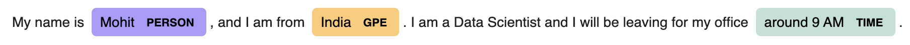
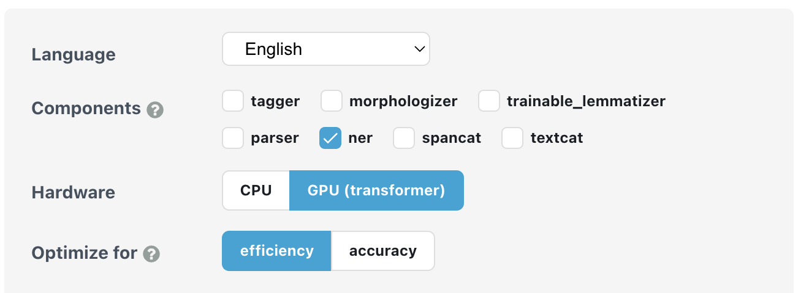

Named entity recognition
Introduction
- Named entity recognition (NER) is the process of identifying entities in the unstructured text, where entities could be objects, people, locations, organizations, etc.
- NER's most basic building block consists of pair of
entity_typeandentity_value. Consider the following example,
## Statement
My name is Mohit, and I am from India.
I am a Data Scientist and I will be leaving for my office around 9 AM.
## Entities
[{
'entity_type': 'PERSON',
'entity_value': 'Mohit',
},
{
'entity_type': 'LOCATION',
'entity_value': 'India',
},
{
'entity_type': 'TIME',
'entity_value': '9 AM',
}]
- The process of extracting entities could be done in two ways.
- Heuristic: by identifying the entities based on the rules.
- Semantic: by identifying the entities based on the semantics and context.
- Heuristic based approach is suited only for simple entities for which approximate rules can be created. Take for example EMAILID, PHONE_NUMBER, WEBSITE, etc. It should be easy enough to create regular expressions for such cases and hence heuristic approach could be applied. We can also apply part of speech based rules to extract certain entities.
- On the other hand, the Semantic approach is required where the cardinality of the entities is high and the context is required to extract the entities. For example, NAME, LOCATION, DESIGNATION, etc. For these cases, we usually train neural network based models that learn to consider the context and extract the entities.
Note
A good approach to creating your NER solution would be to segregate your entities into simple and complex, and then create either a heuristic or a semantic based solution or a combination of both. In short, it is not always suitable to directly go to fancy NN based semantic approaches - it could be unnecessary overkill.
- Remember the entity types are not set in stone and we can even train new models or finetune existing models on our own custom entities.
- For this, in the Semantic-based approach, it's a good idea to finetune the existing model rather than to train a new one as it will require far fewer data.
- The amount of data required to finetune model depends on how similar the custom entities are with the existing entities. Consider the following cases,
- The model is pretrained to detect PERSON and now you want to finetune it to detect MALE_NAME and FEMALE_NAME. As this is just a lower granularity on the existing PERSON entity, a mere ~200 examples (for each new entity type) could give you good results.
- On the other hand, if you now want to finetune a completely new entity like OBJECTIONS_TYPE, you may need ~500 examples.
Note
Another thing to consider is the length of entity_value. With an increase in entity_value you may require more examples to get good accuracy results.
Code
- There are lots of Python-based packages that provide open source NER models. Some of these packages are Spacy, NLTK, Flair, etc. While packages provide an easy interface to the NER models or rules, we can even load and use external open-source NER models.
Using Spacy NER model for Inference
- Spacy comes with several pre-trained models that can be selected based on the use case. For this example, we will use the Transformer model available with Spacy Transformers.
1 2 3 4 5 6 7 8 9 10 11 12 13 14 15 16 17 18 19 20 21 | |
- We can even display the results in a much more intuitive and fancy way by,
1 2 | |

Training custom NER model using Spacy v3
- All NER use-cases are not the same, and you may want to train a custom model with new entity types. Spacy provides an option to train custom NER models as well. To be frank the complete process is quite complicated, but nothing to worry, strap on and let's cover them steo by step.
Config Creation
- To begin with, we will define the settings that will be used throughout the training process. Starting with Spacy v3, all parameter settings need to be configured using a
.cfgfile. We can create a.cfgfile following the guide here. Basically, it requires to- Firstly, create a base config using the quick widget provided at the page. Do remember to check the correct options. (Refer below image for one example)
- Secondly, run CLI command to update the base config
python -m spacy init fill-config base_config.cfg config.cfg

base_config.cfg from Spacy website for NER training.
Data Preparation
- Next we need to prepare the dataset. At high level, you need to prepare pairs of text and entities in the text. Consider the following dummy dataset where we want to extract video game's names, (in CSV format)
| text | label |
|---|---|
| I was playing Call of Duty | {'entities': [[14, 26, 'Game']]} |
| I did not like COD1 and COD2 | {'entities': [[15, 19, 'Game'], [24, 28, 'Game']]} |
- As obvious,
textcontains the base text andlabelcontains all the entities that ideally should be extracted from text. This is our golden dataset. Here, insidelabelwe have a dict withentitieskey and the value is list of different entities. Each entity has[start_index, end_index, entity_type]data. Note, we follow the Python indexing i.e. the indexing starts with 0,start_indexis the index of start character andend_indexis the index ofend character + 1. In the first example,"I was playing Call of Duty"[14:26]will return"Call of Duty"which is a very famous video game 🎮 - Now we will convert the CSV file into Spacy format. It is the recommended format supported by the package. To do this, run the following code,
1 2 3 4 5 6 7 8 9 10 11 12 13 14 15 16 17 18 19 20 21 22 23 24 25 26 27 28 29 30 31 32 33 34 35 36 37 38 | |
Note
Remember to split the CSV file into train and test data. Then you can run the above code twice to generate two spacy files, one for train and one for test.
Also, we can use random split, as stratified split is quite difficult to do. This is because each text may heve multiple instances of same or different entities and we want to split the text based on entities! Because of this, a stratified split is equivalent to solving a optimizing problem - How to split the text samples such that the underlying entities are equally distributed! Hence we will use a random split for rough estimation and the result may surprise you 
Data Validation
- The next step is to perform a validation to check if the data is correctly converted or not. Spacy provides readymade CLI command for this purpose,
spacy debug data -V /content/config.cfg --paths.train /content/train_data.spacy --paths.dev /content/test_data.spacy
- This should print output similar to,
============================ Data file validation ============================
✔ Pipeline can be initialized with data
✔ Corpus is loadable
=============================== Training stats ===============================
Language: en
Training pipeline: tok2vec, ner
7916 training docs
235 evaluation docs
✔ No overlap between training and evaluation data
============================== Vocab & Vectors ==============================
ℹ 876405 total word(s) in the data (33656 unique)
10 most common words: ',' (35938), '.' (24253), ' ' (19522), ':' (17316), 'to'
(16328), 'you' (15474), 'the' (14626), ' ' (14051), ' ' (13869), ' ' (12003)
ℹ No word vectors present in the package
========================== Named Entity Recognition ==========================
ℹ 6 label(s)
0 missing value(s) (tokens with '-' label)
Labels in train data: 'Game'
✔ Good amount of examples for all labels
✔ Examples without occurrences available for all labels
✔ No entities consisting of or starting/ending with whitespace
✔ No entities crossing sentence boundaries
================================== Summary ==================================
✔ 7 checks passed
- Based on the quality of annotations or the tool used, you may encounter error like
Whitespaces presentin the data validation step. This is because the annotations has whitespaces and it becomes difficult to train the model with such examples. In such case, we can fix the data by removing the whitespaces as shown below,
1 2 3 4 5 6 7 8 9 10 11 12 13 14 15 | |
Training the Model
- Now we are ready to train the model. Spacy CLI command can be used,
spacy train --output models/ config/config.cfg --paths.train data/train_data.spacy --paths.dev data/test_data.spacy --gpu-id 0
Note
Make sure to remove --gpu-id 0 if you do not have a GPU.
- This should print something like,
ℹ Saving to output directory: models
ℹ Using CPU
=========================== Initializing pipeline ===========================
[2022-05-31 23:29:00,409] [INFO] Set up nlp object from config
[2022-05-31 23:29:00,413] [INFO] Pipeline: ['tok2vec', 'ner']
[2022-05-31 23:29:00,415] [INFO] Created vocabulary
[2022-05-31 23:29:00,415] [INFO] Finished initializing nlp object
[2022-05-31 23:29:08,553] [INFO] Initialized pipeline components: ['tok2vec', 'ner']
✔ Initialized pipeline
============================= Training pipeline =============================
ℹ Pipeline: ['tok2vec', 'ner']
ℹ Initial learn rate: 0.001
E # LOSS TOK2VEC LOSS NER ENTS_F ENTS_P ENTS_R SCORE
--- ------ ------------ -------- ------ ------ ------ ------
0 0 0.00 14.42 0.39 0.43 0.36 0.00
0 1000 75263.20 7992.36 9.34 9.29 9.39 0.09
0 2000 473275.24 6660.36 20.33 29.45 15.52 0.20
1 3000 203618.32 12177.86 27.76 29.32 26.35 0.28
2 4000 394085.98 14795.70 35.14 44.02 29.24 0.35
3 5000 280698.47 13595.65 34.71 40.58 30.32 0.35
4 6000 332890.64 13044.08 37.39 44.72 32.13 0.37
5 7000 645988.19 12552.55 40.72 45.54 36.82 0.41
6 8000 155963.67 12083.43 34.97 33.01 37.18 0.35
7 9000 802471.84 11443.62 38.64 40.64 36.82 0.39
8 10000 44495.21 10276.14 38.79 40.55 37.18 0.39
9 11000 86229.51 10011.45 40.08 46.86 35.02 0.40
10 12000 198516.08 9752.18 37.38 40.08 35.02 0.37
Epoch 11: 66%|█████████████████████████████████████▍ | 656/1000 [02:34<01:28, 3.89it/s]
Note
Modify the config.cfg file to specify the model to use, the epochs to train for, the learning rate to use and other settings.
Evaluation of the Model
- Finally, once the trainig is done, we can evaluate the model using the Spacy CLI command,
spacy evaluate models/model-best data/test_data.spacy --gpu-id 0
Additional materials
- To train Spacy NER model on a custom dataset: Spacy v3 Custom NER
- Named-Entity evaluation metrics based on entity-level